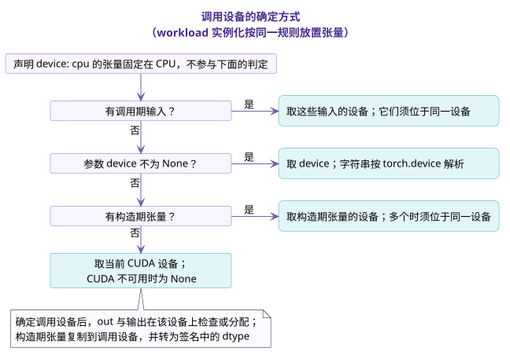

调用与校验¶
一次调用分为构造与调用两个阶段，两个阶段的检查都由签名生成。validator 在 CI 中对签名做静态检查，确保每个 spec 都能生成这些检查。本页说明调用过程中执行的检查、kernel 的选择规则、validator 的检查项，以及 shape_rules 中不被接受的写法。
1. 一次调用的两个阶段¶
在构造阶段，op 按 type 检查参数的取值（包括 dtype 参数是否在允许的集合内），检查非可选的构造期张量都已给出，并检查 ADT 的 invariant。以下各量在构造时确定：
Bool、枚举与 ADT 参数的值；Maybe参数与构造期张量是否给出；- 由构造期张量的形状与 dtype 求得的 index，以及由这些量可以算出的
let。
轴非负、refinement、invariant 等检查，如果在构造时已经可以求值，就在构造时执行，否则推迟到调用时执行。
在调用阶段，forward 外层由签名生成的检查按以下顺序执行：
- 确定各调用期张量是否传入；
- 检查定义域限制；
- 选择 type family 的分支；
- 推断 index，并检查其余的 refinement；
- 检查输出缓冲的前置条件；
- 执行实现；
- 检查输出：输出的数量与是否为
None、形状、dtype、设备与内存布局；out与alias输出必须就是对应的张量对象，其他输出不能与输入共享存储。
任何一项检查失败时，op 都会报错，并指出未满足的那条声明。
如果一次调用写入的所有张量（各输出与被写入的输入）都不含元素，第 6 步不执行任何实现：新的输出按检查过的形状与 dtype 在调用设备上创建，out 与被写入的输入原样返回。输入为空而输出不为空时，照常执行实现。
2. kernel 的选择¶
op 在 interfaces 中声明它调用 kernel 的位置，每个位置对应一个 kernel 接口；一个 kernel 接口的实现，是继承它的 kernel 类。调用时，op 构造 call spec，再调用 kernel_for(interface, call) 取得 entry。同一个 call spec 再次出现时只做一次查找；首次出现时，Op 基类按以下顺序选出唯一一个实现：
- 可用性：实现的
devices与supported_archs； - 适用性：实现的
applies与refusal； - 优先级：实现的
general与preferred_over。
选出的实现由 entry_for(call) 给出 build identity 与构建函数。签名只声明算法本身的要求，每个实现的限制写在实现自己的声明中。
选择规则、新增 kernel 的写法与 backend 的接入方式，见 op 如何选择 kernel。
3. type inference¶
构造阶段先求出由构造期张量能确定的 index，调用阶段再从实际传入的调用期张量求出其余的 index。求解的顺序由 validator 预先确定，与声明的书写顺序无关。
表 1 输入轴的 unification 规则
| No. | 轴的写法 | unification |
|---|---|---|
| 1 | M，且 M 未知 |
M := 实际轴长 |
| 2 | a * M + e，其中 a 是已知的正整数常量，e 已知，M 是唯一的未知量 |
M := (实际轴长 - e) / a，并检查能否整除、结果是否非负 |
| 3 | *S，其中 S 是该形状中唯一未知的部分，其余轴的个数已知 |
S := 对应的若干轴组成的元组 |
| 4 | dtype 为未知的 DType index T |
T := 实际 dtype |
| 5 | 其他写法 | 只检查等式是否成立 |
表 2 由声明求得的 index
| No. | spec | 声明 | 求得的 index |
|---|---|---|---|
| 1 | SiluAndMul | x: "[M, 2 * N]" |
N，同时检查轴长为偶数 |
| 2 | GQA varlen | cu_seqlens_q: "[B + 1]" |
B |
| 3 | GemmW4A16 | activation: "[M, K]"、packed_weight: "[N, K // 2]" |
K 由 activation 求得，packed_weight 的 K // 2 只用于检查 |
- 在某个分支上被用到的每个
Dim、Shape、DTypeindex，都必须能由输入求得，或由参数给出。只出现在输出中的 index 必须是参数或let。 - generator 只在 workload 实例化时生成 metadata 张量的取值，并帮助确定 workload 行中不写的 index；实际调用时，这些 index 同样从传入的张量求得。
- 如果某个 index 无法求得，或者有多个解，validator 会拒绝这个 spec。
- 对于输出缓冲
out，推断阶段只确定它是否传入；输出类型确定之后，再按输出类型检查它。 - 如果轴长与逻辑维度之间不是 affine 关系，可以用一个名字表示物理轴，再用
let计算逻辑维度。例如 MHCPre 写作b: "[Q]"与let: {n: "mhc.expansion(Q)"}。
4. 调用设备¶
调用设备按下图确定。workload 实例化时，张量也按同样的规则放置。

- 声明了
device: cpu的张量始终位于 CPU，不参与调用设备的判定；构造期张量也只有未声明device: cpu的才参与判定。 - 没有调用期张量、
device参数与参与判定的构造期张量时，调用设备取当前的 CUDA 设备；CUDA 不可用时为None。设计上，在这一步之前还会由显式指定或进程默认的 target 在其声明的设备类别中选择设备，这一步尚未实现。 - 调用设备确定后，
out与各输出在该设备上检查或分配。 - 没有声明
device: cpu的构造期张量，在调用时复制到调用设备，并转换为签名中的 dtype。 - 声明了
contiguous: true的张量，由生成的检查确认其内存连续；workload 实例化生成的张量总是连续的。
5. torch.compile 与 SymInt¶
在 torch.compile 下，生成的检查在 SymInt 上求值，此时各 discriminant 已经是确定的 Python 值。
- 需要把 SymBool 转为 Python 布尔值的表达式，只在构造时求值。
- op 类可以声明 compile boundary，表示它支持
fullgraph=True。对这样的类，validator 要求其所有表达式都能在 SymInt 上求值。 - 表达式字符串在代码生成之前完成解析与检查，生成的代码在运行时不再解析字符串。
调用方在 torch.compile 下需要遵守的约定见接入 torch.compile。
6. validator 的检查项¶
scripts/validate_manifest.py 在 discriminant 的每一种取值组合上检查每个 spec。参与组合的量包括：
- type family 的
match； optional与nullable；mutated；- 输出缓冲是否传入；
- 判断 index 是否被用到时涉及的量。
对于被定义域限制排除的组合，validator 只跳过 type family 覆盖与求解顺序这两项检查。如果一个 spec 需要检查的取值组合超过配置的上限（默认 256），validator 给出 advisory 级别的提示，但仍然完整地检查这个 spec。
在每一种取值组合上，validator 检查以下各项：
- 每个名字的类别与其 kind 相符，每个参数的
type与其各使用位置所要求的 kind 相容。 - type family 的
cases在接受的取值上既无遗漏也无重叠，type family 之间的引用无环。 - 每个 index 都能求得（见第 3 节）。
let之间的依赖无环。- 每个表达式都属于表达式语言，用到的 primitive 都是内建的。
- 在每条 workload 行上，generator 的结果都能与声明做 unification，
requires都成立。 - 对于声明了 compile boundary 的类，其所有表达式都能在 SymInt 上求值。
- 每条 workload 行都能实例化。
- 在每个 effect 分支上，operator schema、别名关系与 roofline 的读写计数一致。
对于 implemented 的 op，validator 还检查代码与 spec 是否一致，包括 __init__ 与 params、forward 与调用期输入，以及 composition 与类的 delegate_types、kernel_types。spec-only 的 op 跳过这些依赖代码的检查。
- CI 对整份 manifest 运行 validator。
- validator 逐字段解析 spec。某个字段无法解析时，validator 报告这个字段，并只跳过依赖该字段的检查，其余检查照常进行。
- 导入 op 时，manifest 以宽松模式加载，即使 manifest 不完整，op 也能正常导入；严格的检查只由 validator 执行。
7. 不被接受的写法¶
shape_rules 中只写 refinement。兼做形状声明、名字定义或存在性判断的写法不被接受：
表 3 不被接受的写法及对应的改写
| No. | 不被接受的写法 | 例子 | 改写为 |
|---|---|---|---|
| 1 | 读取张量的 shape |
x.shape == (B, S, H, D) |
在张量上声明形状：x: {shape: "[B, S, H, D]"} |
| 2 | 用等式表示两个张量形状相同 | output.shape == input.shape |
两个张量使用同一个形状项，例如 [*S] |
| 3 | 用等式定义新名字 | C_in_g == C_in // groups |
let: {C_in_g: "C_in // groups"} |
| 4 | 对张量使用 x is None |
bias is None or ... |
not present(bias) or ... |
| 5 | 对值使用 v is None |
max_seqlen is None |
not present(max_seqlen) |
| 6 | isinstance |
s[0] if isinstance(s, tuple) else s |
per_axis(s, 0, 2) |
| 7 | 集合推导式 | len({d % n for d in dim}) == len(dim) |
unique_axes(dim, n) |